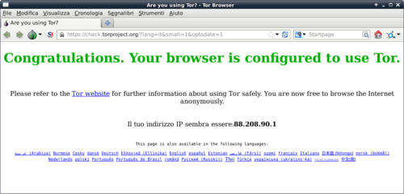

- 1 ¿Que es freepto?
- 2 ¿Como arrancar Freepto?
- 3 ¿Como arranco el sistema cifrado?
- 4 ¿Que tengo que hacer la primera vez que uso Freepto?
- 5 Herramienta instalada
- 6 ¿Como puedo navegar de manera anónima en el web?
- 7 ¿Como proteger mis comunicaciones?
- 8 ¿Como proteger mis datos?
- 8.1 Wipe
- 8.2 MAT – Metadata Anonymisation Toolkit
- 8.3 BleachBit
- 8.4 Truecrypt
- 8.5 Tomb – The Crypto Undertaker
- 9 Acceso automático a los Hidden Service TOR
- 10 Arrancar Freepto en ordenadores no fiables
- 11 Personalizar Freepto
- 12 Crear una nueva Freepto
¿Que es freepto?¶
Freepto es un sistema operativo live basado en GNU/Linux. Un sistema operativo live tiene la capacidad de arrancarse directamente desde usb, sin tocar el disco duro del ordenador. Así que permite de tener el propio sistema operativo siempre en el bolsillo, arrancándolo en el ordenador que se prefiere, sin tener que instalar nada.
Existen muchos otros sistemas live, pero Freepto se diferencia de lo demás por la atención que da a la seguridad y a la facilidad de utilizo, ofreciendo un sistema pensado para las necesidades del activismo.
La pagina oficial del proyecto la encuentras aquí: avana.forteprenestino.net/freepto
¿Como arrancar Freepto?¶
Para arrancar Freepto es necesario configurar el propio BIOS para efectuar el boot desde USB.
Para selecionar el boot desde USB, justo después de encender el ordenador, pulsar la tecla ESC: esto hará aparecer un panel de selección del dispositivo del boot. Selecciona el pincho USB.
Si esto no funcionaría, se deberá acceder al BIOS: usualmente es suficiente al arranque del ordenador pulsar las teclas ESC, F2, SUPR o F10. Desafortunadamente es imposible indicar una proceso que sea valido para todos los casos, porque el menú del BIOS puede ser diferente por cada modelo de ordenador. Así que en casos de problemas aconsejamos buscar en Internet el proceso, poniendo “boot usb” seguido con el modelo / marca de tu ordenador. Una vez configurado el BIOS con el arranque USB, tienes que reiniciar el ordenador y esperar que Freepto se arranque.
Si todo va bien deberías ver algo así en la pantalla:

Problemas comunes¶
Veo la pantalla con el logo, pero al arranque se para por problemas con el tipo de CPU.
Estas utilizando un ordenador muy viejo que no soporta el 64bit. Selecciona la opción “(486)” del menú (nota: esta es una novedad de Freepto 0.1.2: antes no era posible con estos ordenadores).
¿Como arranco el sistema cifrado?¶
Durante el proceso de boot de Freepto, te será pedido de insertar la passphrase para desbloquear la persistencia cifrada, con un texto como esto:

Es posible ignorar esta petición y arrancar Freepto en modalidad live. De esta manera cualquiera modificación hecha durante el utilizo de Freepto será perdida al siguiente reinicio.
Montando la persistencia es posible guardad los documentos creados y llevárselos en un sistema seguro y cifrado.
Si no recuerdas la contraseña, o no quieres insertarla porque el ambiente no es fiable (por ejemplo hay cámaras de seguridad) puedes evitar de poner la contraseña y el sistema se arrancará igual pero en modalidad “live”: no verás tus datos guardados ni podrás guardar otros nuevos. Pero podrás utilizar el sistema de base sin problemas.
¿Que tengo que hacer la primera vez que uso Freepto?¶
Modificar la passphrease de cifrado¶
Todas las crypto-usb Freepto tienen una passphrase por defecto igual (“freepto”), esto es necesario para permitir de automatizar el proceso de instalación y distribuir un sistema ya instalado y funcional.
Es ABSOLUTAMENTE NECESARIO modificar la passphrease de defecto, con una elegida por vosotros.
Para cambiar la passphrease hay que seguir estos tres simples pasos:
- 1. Abrir el menú de las aplicaciones en alto a la izquierda, ir en “Accesorios” → “Utilidad de discos”

- 2. Seleccionar el pincho usb y luego la segunda partición (cifrada)

- 3. Desde el menú elegir “Cambiar contraseña”

Modificar la contraseña del usuario paranoid¶
El usuario por defecto es el siguiente:
- user:
paranoid - password:
live
Es importante cambiar la contraseña con una más segura.
Para cambiar la contraseña hay que abrir un terminal y digital el mando passwd y te pedirá de insertar la contraseña actual (live) y de escribir dos veces la nueva.
paranoid@freepto:~$ passwd
Cambiando contraseña de paranoid.
(actual) contraseña de UNIX:
Introduzca lanueva contraseña de UNIX:
Vuelva a escribir lanueva contraseña de UNIX:
passwd: contraseña actualizada correctamenteHerramienta instalada¶
En el clásico menú de las aplicaciones hemos querido tener en evidencia las más importantes para tutelar la seguridad con un menú dedicado.
Entre ellas hay herramientas para la navegación anónima, herramienta para limpiar los ficheros temporáneos, sistema de cifrado. La descripción de estos programas es explicada más adelante.

¿Como puedo navegar de manera anónima en el web?¶
Todas las siguientes herramientas son ya instaladas por defecto en Freepto.
Tor Browser Bundle¶
El Tor Browser es un programa que integra Tor, Vidalia y una versión modificada de Firefox que mejora la seguridad y el anonimato de la navegación. Para mayor informaciones consulta la sección del folleto dedicada.
Los objectivos principales del TorBrowserBundle son el anonimato y la seguridad de tu navegación, por esta razón sus actualizaciones por parte de los desarrolladores son muy frecuentes y es muy importante para ti tener siempre la ultima versión disponible.
Por esta razón en Freepto TorBrowser no es instalado por defecto, pero es presente TorBrowser-Launcher, algo parecido a un gestor del TorBrowserBundle que se encarga de bajar la ultima versión disponible y de informarte cuando hay una nueva, de esta manera puedes tener con pocos clicks siempre la ultima versión disponible.
Desde el menu freepto ejecutas Tor Browser Settings:

Selecciona como versión stable y selecciona check for updates next launch:

Pincha el botón “Launch Tor Browser” y se empezará a bajar la ultima versión.

Al final de la instalación se abrirá TorBrowser y podéis empezar a navegar de manera anonima.

VPN¶
En Freepto es instalado OpenVPN, un programa que te permite de utilizar los servicios de VPN autogestionados de Riseup.net y Autistici/Inventati.
MAC Changer¶
Puedes arrancarlo desde el menú “Freepto”. Il MAC Address es identificativo univoco de la tarjeta de red utilizada de tu ordenador.
Podría ser útil, sobretodo si te conectas con las WiFi publicas y abiertas, modificar tu MAC Address. De esta manera será muy difícil asociar tu actividad en linea a un ordenador fisico.

¿Como proteger mis comunicaciones?¶
Chat: Jabber + OTR¶
Para la chat entre 2 personas, Jabber+OTR es la manera más segura en absoluto.
Pidgin es el programa más adapto y simple para hacerlo. Su Freepto, lo encontrarais ya configurado para ser utilizado con OTR.
Además, Pidgin utilizará TOR en automatico: de esta manera nadie sabrá donde estais, y quien controla vuestra red (universidad, access point publico, provider de casa, empresa) no sabrá ni siquiera que estas chateando.
Si tenéis ya un usuario Riseup o A/I tenéis también un usuario Jabber.
Chat: IRC + TOR¶
Para conversaciones entre más usuarios, Jabber puede ser utilizado, pero sin utilizar OTR: de esta manera la seguridad depende de vuestros gestores (por ejemplo autistici.org es fiable, gmail no).
Si la paranoia no es alta, IRC es un protocolo en las cuales las chat multiples son muy simples de gestionar. El programa para utilizarlo es Xchat, que su Freepto es ya configurado para usar TOR para tener la conexión anónima y conectarse a los servidores IRC de Autistici/Inventati de manera segura.
Tienes que considerar que en IRC los usuarios, por defecto, no han efectuado el login y cualquiera podría llamarse con el nombre de cualquiera otro sin ningún control. Hay métodos para solucionar este limite, o sea registrar los usuarios. Resumiendo, IRC es una óptima plataforma para chatear con un nivel de seguridad bastante alto y con un utilizo muy sencillo.
Mail: GnuPG¶
Para enviar los correos de manera segura, GPG es la herramienta mejor. En Freepto hemos instalado Thunderbird+Enigmail: de esta manera hay un gestor de correos que permite manejar todo lo que necesitamos para el cifrado de ficheros y correos con GPG.
¿Como proteger mis datos?¶
Wipe¶
El programa wipe cancela el contenido de los ficheros con datos casuales, antes de borrar el fichero. De esta manera además de será borrada la referencia del fichero en el disco, será borrado también el contenido.
Para ejecutar wipe es suficiente hacer click con la tecla derecha del ratón encima del fichero y elegir “Borrar con seguridad los ficheros”.

El wipe del fichero es mas útil en los filesystem no cifrados que en los cifrados! :)
A partir de Freepto 0.1.2 esto puede ser hecho también para las carpetas: de esta manera se pueden borrar velozmente y con seguridad muchos ficheros simplemente haciendo click con la tecla derecha encima del la carpeta y pinchar en “Borrar con seguridad las carpetas”.
MAT – Metadata Anonymisation Toolkit¶
La mayor parte de los ficheros multimedia (audio, imágenes, vídeos, pdf, documentos) contienen mucha información “escondida” que podría hacernos perder el anonimato; por ejemplo, la imágenes y los vídeos suelen contener el modelo de cámara utilizado; es bien eliminar estos datos antes de difundir estos ficheros.
Para utilizarlo es suficiente abrir MAT, pinchar en “Add files” y seleccionar los ficheros de “limpiar”. Lo ficheros aparecerán en la ventana de MAT y podremos seleccionarlos y pulsar el botón “Clean selected files”.
MAT creará, para cada fichero, una versión -cleaned, manteniendo sin modificaciones el fichero original.

BleachBit¶
BleachBit es un programa integrado que ejecuta la eliminación de una serie de datos potencialmente sensibles que suelen ser guardados en la cache del navegador, e los ficheros temporáneos y en el disco duro. Es el equivalente al CCleaner de Windows.
Truecrypt¶
Truecrypt es un programa que permite gestionar ficheros y discos cifrados. Gracias a este programa podrá intercambiar con seguridad ficheros con otras personas.
Para mayor información consulta la pagina web oficial: truecrypt.org
Tomb – The Crypto Undertaker¶
Tomb es un programa libre de consola que permite gestionar los ficheros cifrados. Es adapto para los usuarios más expertos, porque no tiene una interfaz gráfica.
Para mayor información consulta la pagina web oficial: dyne.org/software/tomb
Acceso automático a los Hidden Service TOR¶
En Freepto, Iceweasel es configurado para usar automáticamente Tor cuando se accede a los Hidden Service, o sea todas aquellas URI que acaban con “.onion”. Esto es posible gracias a FoxyProxy un plugin que permite de usar proxy diferentes según la pagina que queremos ver.
De esta manera no es necesario abrir TorBrowser cada vez que se quiere ver un Hidden Service (aún que para mayor anonimato es mas consejato usarlo).

Arrancar Freepto en ordenadores no fiables¶
Si estás usando Freepto en un ordenador accesible a cualquiera (a lo mejor en un locutorio, en una aula ocupada de una universidad o en uno espacio ocupado) considera que podría haber un keylogger (hardware) capaz de registrar todas tus contraseñas.
Así que mientras que se arranca Freepto evita de insertar la contraseña de cifrado porque esto podría poner en peligro la protección del file system cifrado.
Puedes arrancar Freepto en la versión “live” (sin poner tu contraseña del cifrado, y utilizando el sistema a su estado inicial) y luego podrás escribir en seguridad tus contraseñas (para hacer el login en la webmail, etc..) con el utilizo de Florence, un teclado virtual que te permite de protegerte contra keylogger hardware.
Por supuesto Florence no te protege de la presencia de cámaras y de ojos indiscretos, así que evita de usar ordenadores en sitios controlados por cámaras (ha pasado que unas contraseñas han sido robadas de esta manera, así que cuidado!).
Puedes encontrar Florence en el menu “Paranoia” y tendrás una ventana similar a esta:

Personalizar Freepto¶
Freepto es un sistema operativo completo, así que es posible ponerlo al día, instalar nuevos programas y personalizarlo. La manera mejor para instalar nuevos programas es …..
Crear una nueva Freepto¶
Para crear Freepto es necesario tener un sistema Linux y instalar el programa makefreepto.
Dentro Freepto esto programa es ya incluido, y puede ser útil si quieres crear una nueva Freepto para otra persona. También desde otro sistema operativo es posible bajarlo y instalarlo.
No te hagas intimar da la consola, hacen falta solo pocos pasos:
1. Baja la ultima versión de Freepto¶
Apres el terminal y copia y pega el siguiente texto:
wget -c http://avana.forteprenestino.net/freepto/iso/{makefreepto,freepto-ES_0.2.img}Esto bajará makefreepto y la imagen de Freepto.
2. Identifica el nuevo soporte USB¶
Inserta el soporte USB y ejecutas lo siguiente para identificare el “device” al cual corresponde.
Copia y pega esto en la consola:
dmesg | fgrep '[sd'Tendrás un output similar a esto:
[ 3773.548418] sd 5:0:0:0: [sdc] 15625216 512-byte logical blocks: (8.00 GB/7.45 GiB)
[ 3773.550759] sd 5:0:0:0: [sdc] Write Protect is off
[ 3773.550763] sd 5:0:0:0: [sdc] Mode Sense: 03 00 00 00
[ 3773.551747] sd 5:0:0:0: [sdc] No Caching mode page present
[ 3773.551752] sd 5:0:0:0: [sdc] Assuming drive cache: write through
[ 3773.555490] sd 5:0:0:0: [sdc] No Caching mode page present
[ 3773.555496] sd 5:0:0:0: [sdc] Assuming drive cache: write through
[ 3773.562702] sd 5:0:0:0: [sdc] No Caching mode page present
[ 3773.562705] sd 5:0:0:0: [sdc] Assuming drive cache: write through
[ 3773.562708] sd 5:0:0:0: [sdc] Attached SCSI removable diskLa parte “relevante” de todo el output es aquella entre las paréntesis, en este ejemplo el “device” es /dev/sdc/
ATENCIÓN: indicando el device equivocado puedes arriesgarte a borrar por equivocación TODOS LOS DATOS PRESENTES EN TU ORDENADOR! Así que si tienes dudas repite la operación para estar seguro de haber acertado el device.
Para estar más seguro, puedes lanzar esto:
echo $(( $(blockdev –getsize64 /dev/sdc) / (1024*1024) ))por supuesto tienes que substituir a sdc con el nombre del device que has encontrado antes.
Este comando te dirá la dimensión (en MegaBytes) del dispositivo; esto es un buen método empírico para no confundir los dispositivo externos (de pocos giga) con el disco del ordenador (de cientos de gigas).
3. Instalar Freepto¶
En la consola ejecutas el sigiuente comando (por supuesto tiene que cambiar “LUkS_p4ssw0rd!&” con tu contraseña):
sudo bash makefreepto -i freepto-ES_0.2.img -p 'LUkS_p4ssw0rd!&' /dev/sdcTendrás un resultado parecido a esto
[+] Umount device /dev/sdc
[+] Remove all partition on /dev/sdc
[+] Starting copy
with PID 4286
Writing 936M: 100%1914880+0 records in
1914880+0 records out
980418560 bytes (980 MB) copied, 358.496 s, 2.7 MB/s
./makefreepto: line 127: kill: (4286) - No such process
[+] Completed!
[+] Make encrypted persistent partition
Information: You may need to update /etc/fstab.
System is out of entropy while generating volume key.
Please move mouse or type some text in another window to gather some random events.
Generating key (50% done).
Generating key (75% done).
Generating key (87% done).
Generating key (100% done).
Command successful.
[+] Freepto is ready for use